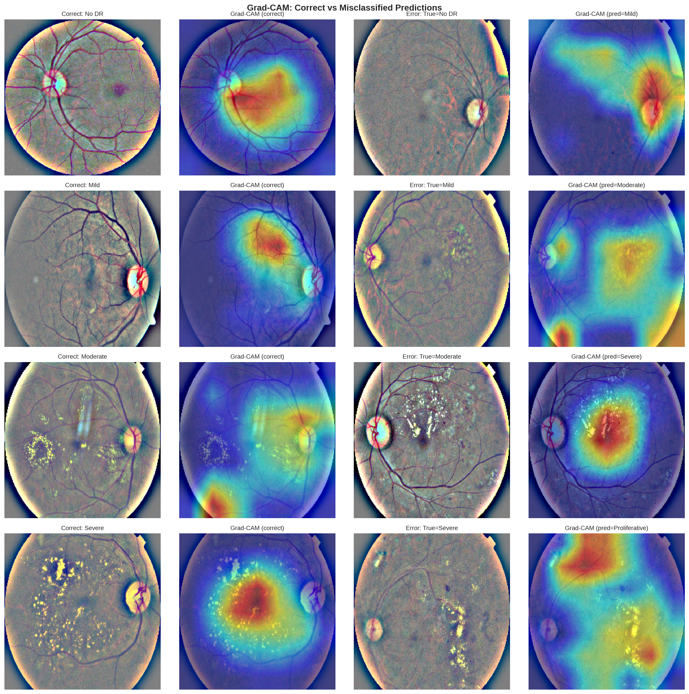
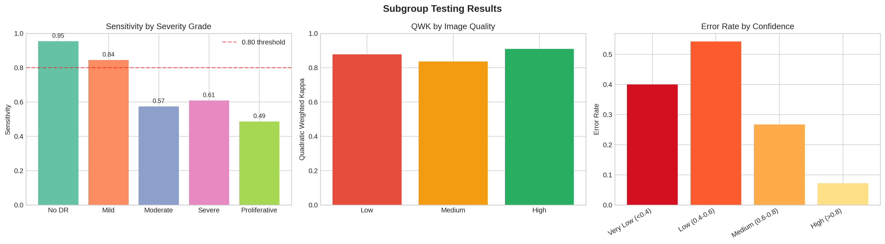
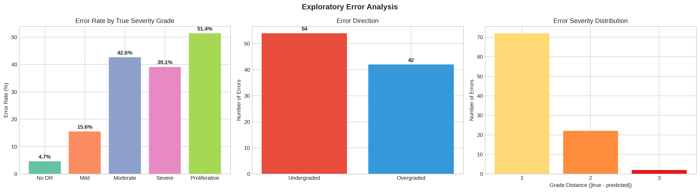
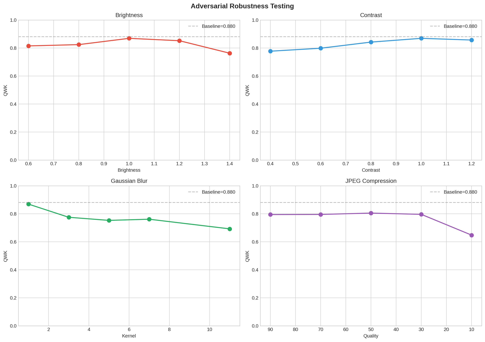

A safety audit of the diabetic retinopathy classifier from my retinal project. Using the Medical Algorithmic Audit framework, I look past the headline kappa to find where the model fails, how badly, and what that would mean for a patient.
Responsible AI · Model risk management · Medical Algorithmic Audit · Subgroup testing · FMEA

The model scores a quadratic weighted kappa of 0.88, which reads as strong agreement with expert graders. That number hides the failures that matter. Broken down by severity, sensitivity falls from 95% on healthy retinas to 48.6% on proliferative disease, the grade that needs emergency referral. The audit follows the Medical Algorithmic Audit framework, working through error analysis, subgroup testing, adversarial robustness, and a structured risk score.
Performance is strong on no-disease and mild cases and weak on the rare, urgent grades. The model also undergrades more than it overgrades. About 56% of its errors call a case less severe than it is, which in a screening programme means a delayed referral rather than a false alarm.

Figure 1. Sensitivity by severity grade. It drops from 95% on no-disease to 49% on proliferative disease, the grade that most needs to be caught.

Figure 2. Errors by direction and distance. Most mistakes undergrade by one step, the direction that delays care.
I simulated the image-quality problems a real clinic sees. Gaussian blur drops kappa from 0.87 to 0.69, and heavy JPEG compression drops it to 0.65. Both are realistic for camera defocus, patient movement, or images compressed for telemedicine. Moderate compression is tolerated well.

Figure 3. Kappa under four image perturbations. Blur and heavy compression cause the largest drops.
Scoring each failure mode by severity and frequency puts undergraded proliferative disease at the top of the risk list. The audit recommends concrete guardrails: route every severe or proliferative prediction to a human, send low-confidence cases (below 0.6) for review, add an image-quality gate before inference, and validate externally on data that actually records age, sex, and ethnicity, which this dataset does not. Auditing the model taught me more about it than training it did. The full audit, the risk table, and the dataset documentation are in the repository.